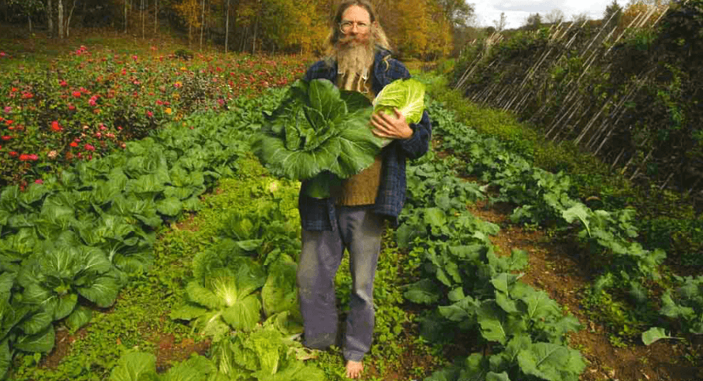

FOOD FOR FOOD
Exploring The Principles of Farming

Some of the questions we will try to answer:
- How can you establish a self-contained independent organism - that is Your Farm?
- What would you like to get out of your farm for the effort you put in?
- What does your farm need, to be able to give you what you want in return, while continually improving in health and vitality?
CONTACT US!